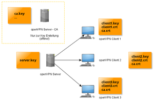

OpenVPN
Dieser Artikel wurde für die folgenden Ubuntu-Versionen getestet:
Ubuntu 16.04 Xenial Xerus
Ubuntu 14.04 Trusty Tahr
Zum Verständnis dieses Artikels sind folgende Seiten hilfreich:
OpenVPN  ist eine Virtual-Private-Network-Software, die auf dem bewährten Verschlüsselungsprotokoll SSL/TLS aufbaut, welches auch für die Verschlüsselung von Webbrowser-Sitzungen im E-Commerce eingesetzt wird.
ist eine Virtual-Private-Network-Software, die auf dem bewährten Verschlüsselungsprotokoll SSL/TLS aufbaut, welches auch für die Verschlüsselung von Webbrowser-Sitzungen im E-Commerce eingesetzt wird.
Die Vorteile von OpenVPN gegenüber anderen Lösungen liegen in der (relativ) einfachen Konfiguration und der Verfügbarkeit für zahlreiche Plattformen (u.a. Linux, Solaris, versch. BSDs, Android, Mac OS X und Microsoft Windows) bei gleichzeitig sehr guter Sicherheit.
Installation¶
Folgende Pakete werden benötigt [1]:
openvpn (universe [2])
easy-rsa (universe)
 mit apturl
mit apturl
Paketliste zum Kopieren:
sudo apt-get install openvpn easy-rsa
sudo aptitude install openvpn easy-rsa
Als erstes sollte man die Beispielkonfiguration und das Verzeichnis zur Schlüsselerzeugung an einen geeigneten Ort entpacken [3]:
sudo cp /usr/share/doc/openvpn/examples/sample-config-files/server.conf.gz /etc/openvpn/ sudo gunzip /etc/openvpn/server.conf.gz sudo cp -r /usr/share/easy-rsa /etc/openvpn/easy-rsa2 # Alternativ: make-cadir /etc/openvpn/easy-rsa2
Server¶
Nachdem man die oben beschriebenen Schritte durchgeführt hat, kann man für die Server-Konfiguration hier fortfahren.
Schlüssel und Zertifikate generieren¶
Hinweis:
Im folgenden Abschnitt wird beschrieben, wie man die Zertifikate auf dem Server als Root im Verzeichnis /etc/openvpn/easy-rsa2 erstellt. Man sollte diese Certificate Authority (CA) aber aus Sicherheitsgründen möglichst auf einem anderen (offline) Rechner erstellen. Man benötigt dazu dann auch keine Root-Rechte, wenn man als normaler Benutzer Schreibrechte besitzt. Weiterhin sind die Schlüssel vor unberechtigtem Zugriff besser geschützt - insbesondere der ca.key sollte besonders behandelt werden, da ein Angreifer mit diesem Schlüssel beliebige eigene Schlüssel signieren könnte und ungehinderten Zugriff auf den OpenVPN Server erlangen würde.
Nach dem Erzeugen muss man dann nur noch die jeweiligen Schlüssel und Zertifikate auf die entsprechenden Rechner kopieren, und zwar auf jeden Rechner (Server und Clients) seine eigene .key- und .crt-Datei sowie die globale ca.crt. Der Server benötigt auch noch die Diffie-Hellman-Datei dh2048.key. Der CA-Schlüssel ca.key wird dagegen nur innerhalb der CA benötigt und muss nicht transferiert werden.
Die gegenseitige Authentifizierung zwischen Server und Client findet bei OpenVPN über kryptografische Schlüssel und Zertifikate statt, die als erstes erstellt werden müssen. Dazu wechselt man zuerst in das Verzeichnis /etc/openvpn/easy-rsa2/ und editiert[4] dort die Datei vars mit Root-Rechten[7]. In der Datei findet man am Ende folgende Einträge:
export KEY_COUNTRY="DE" export KEY_PROVINCE="Nordrhein-Westfalen" export KEY_CITY="Duesseldorf" export KEY_ORG="Internet Ltd." export KEY_EMAIL="info@webmaster" export KEY_EMAIL=info@webmaster export KEY_CN=changeme export KEY_NAME=changeme export KEY_OU=changeme export PKCS11_MODULE_PATH=changeme export PKCS11_PIN=1234
Diese Einträge müssen ggf. auf die eigenen Verhältnisse angepasst werden.
Ab 14.04 muss noch der Eintrag:
export KEY_ALTNAMES="Irgendwas"
eingfügt werden. Mit ALTNAMES sind Aliases bzw Pseudonyme gemeint.
Hinweis:
Aufgrund eines Fehlers wird manchmal das Unterverzeichnis für die Keys nicht erstellt. Man sollte dies darum von Hand nachholen (weiterhin in /etc/openvpn/easy-rsa2/):
sudo mkdir keys
Experten-Info:
In älteren Ubuntu Versionen kann durch das Erhöhen von export KEY_SIZE=1024 auf 2048 oder 4096 in der vars-Datei die Sicherheit erhöht werden! Dann müssen aber alle Zertifikate neu erstellt werden! In neueren Ubuntu Versionen wird als Standard 2048 genutzt.
Im späteren Verlauf wird von 2048 ausgegangen
Als nächstes muss die neueste openssl-x.x.x.cnf umbenannt werden in openssl.cnf oder ein symbolischer Link erstellt werden.
sudo cp openssl-x.x.x.cnf openssl.cnf #Alternativ: sudo ln -s openssl-x-x-x.cnf openssl.cnf
Danach muss die oben angepasste Datei vars in die Umgebungsvariablen aufgenommen werden [3] (dabei aufpassen, dass man sich auch wirklich im Verzeichnis /etc/openvpn/easy-rsa2/ befindet):
source ./vars
Es erscheint eine Warnmeldung, worauf mit den folgenden Skript-Aufrufen das Master-Zertifikat und der Master-Schlüssel erstellt werden:
sudo -E ./clean-all sudo -E ./build-ca
Hinweis:
Falls es hierbei zu Fehlern kommt, diesen Foreneintrag berücksichtigen.
Jetzt muss noch das Zertifikat und der Schlüssel für den Server erstellt werden:
sudo -E ./build-key-server server
Bei "Common Name" sollte der Name eingegeben, mit dem auf den Server später zugegriffen wird (z.B. ein DynDNS-Name). Das "Challenge Password" sollte leer gelassen werden, sonst wäre es möglich sich mit diesem Passwort anzumelden. Um die Datenbank zu aktualisieren, muss danach zweimal mit Y bestätigt werden.
Anschließend werden nun die Schlüssel für die Benutzer angelegt:
sudo -E ./build-key ersterclient sudo -E ./build-key zweiterclient sudo -E ./build-key dritterclient
Bzw. wenn die Schlüssel mit einem Passwort geschützt werden sollen (welches bei jedem Anmelden eingegeben werden muss):
sudo -E ./build-key-pass ersterclient sudo -E ./build-key-pass zweiterclient sudo -E ./build-key-pass dritterclient
Das geschieht nach dem gleichen Prinzip wie beim Server, jedoch wird nun bei "Common Name" jeweils der Name des Clients eingetragen.
Hinweis:
Benötigt man zu einem späteren Zeitpunkt weitere Zertifikate, muss zuerst die vars erneut gesourcet werden. Danach können wie gewohnt neue Zertifikate mittels ./build-key erstellt werden.
Um kryptografische Schlüssel sicher über unsichere Kanäle auszuhandeln, werden jetzt die Diffie-Hellmann-Parameter generiert. Geduld, der Vorgang dauert!
sudo -E ./build-dh
 Wenn die Erstellung erfolgreich gewesen ist, liegen nun alle benötigten Dateien im Verzeichnis /etc/openvpn/easy-rsa2/keys/.
Hinweis:
Key Übersicht: CA Maschine (hier wurden die Zertifikate erstellt): ca.crt, ca.key; Server: ca.crt, server.crt, server.key; Client: client.crt, client.key, ca.crt
Die Dateien mit der Endung .key sind die geheimen Schlüssel. Die .crt-Dateien sind nicht geheime Zertifikate.
Achtung: Schlüssel und Zertifikate dürfen zwischen Server und Client nicht als ASCII Dateien übertragen werden, sie können dadurch unbrauchbar werden. Die Dateien sollen in ein Archiv (z.B. zip / tar) gepackt werden und erst dann verschlüsselt (z.B. über GnuPG) übertragen werden.
Die Client-Schlüssel und -Zertifikate werden nun auf die Clients transferiert, der server.key bleibt nur auf dem Server. Die ca.key Datei sollte aus Sicherheitsgründen vom Server entfernt werden. Sie wird ausschließlich für die Erstellung weiterer Schlüssel benötigt und ist daher sensibel. Im laufenden Serverbetrieb hat sie keine Bedeutung
Die Datei ca.crt muss sowohl auf dem Server als auch auf dem Client liegen. Sie dient zur Identifikation zwischen Server und Client.
tar -cf client1.tar client1.key client1.crt ca.crt
Konfiguration¶
Nun muss noch in der Server-Konfigurationsdatei /etc/openvpn/server.conf der Pfad zu den Schlüsseln angepasst werden. Alle anderen Voreinstellungen sind in Ordnung.
ca ./easy-rsa2/keys/ca.crt cert ./easy-rsa2/keys/server.crt key ./easy-rsa2/keys/server.key # Diese Datei geheim halten. dh ./easy-rsa2/keys/dh2048.pem # Diffie-Hellman-Parameter
Hinweis: sollte bei Serverstart die Fehlermeldung "Cannot open dh2048.pem for DH parameters - No such file or directory" auflaufen, muss der Verweis auf die Quelle für die Diffie-Hellman-Parameter (weiter unten in der Datei) auskommentiert werden.
Zur Verbesserung der Sicherheit sollte man den Daemon unter einer unprivilegierten Benutzerkennung laufen lassen, indem man folgende Zeilen aktiviert:
# Downgrade privileges after initialization (non-Windows only) user nobody group nogroup
Noch besser ist es, hier nicht auf die Kennung nobody/nogroup zurückzugreifen, sondern eine eigene spezialisierte openvpn/openvpn-Identität zu schaffen, wobei man die Shell auf /bin/false setzen kann.
sudo addgroup --system --no-create-home --disabled-login --group openvpn sudo adduser --system --no-create-home --disabled-login --ingroup openvpn openvpn
Wer den Server in einem privaten LAN stehen hat, muss noch "Port-Forwarding" auf seinem Router aktivieren. OpenVPN nutzt standardmäßig den Port 1194 (UDP), der auf die interne IP-Adresse des VPN-Servers weitergeleitet werden muss. Wer einen Linux-Router betreibt, kann dafür das nathelper-Skript verwenden. Besitzer eines Hardware-Routers sollten bei Bedarf dessen Betriebsanleitung oder die Webseiten des Router-Herstellers zu Rate ziehen.
Jetzt kann der Server durch Upstart gestartet werden:
sudo service openvpn restart
Server Status prüfen:
sudo service openvpn status
Server Status stoppen:
sudo service openvpn stop
Hinweis: falls der Start nicht erfolgreich war und folgender Fehler in /var/log/daemon.log bzw. /var/log/syslog steht (häufig bei virtualisierten Systemen der Fall):
openvpn[...]: Note: Cannot open TUN/TAP dev /dev/net/tun: Permission denied (errno=13) openvpn[...]: Note: Attempting fallback to kernel 2.2 TUN/TAP interface openvpn[...]: Cannot allocate TUN/TAP dev dynamically
hilft eventuell der Abschnitt Probleme weiter.
Mehrere Server¶
Um mehrere OpenVPN-Server laufen zu lassen, muss zunächst in der Datei /etc/default/openvpn die richtige Option aktiviert werden, indem man das # entfernt:
#Entweder für alle *.conf Datein: AUTOSTART="all" #wenn alle *.conf eingelesen werden sollen. #oder nur für bestimmte: AUTOSTART="home office" #"home office" durch den Namen der jeweiligen server.conf Datei ersetzen (ohne .conf).
Ab 16.04 muss dann die Konfiguration mit:
sudo systemctl daemon-reload
neu eingelesen werden.
Nun sollten alle wichtigen Dateien und Ordner für die neue Konfiguration verdoppelt werden:
cd /etc/openvpn sudo cp server.conf server2.conf #Obligatorisch sudo cp easy-rsa2 easy-rsa3 #Optional - Wenn neue Schlüssel benutzt werden sollen sudo cp ipp.txt ipp2.txt #Optional - Verzeichnis der IP Adressen sudo cp openvpn-status.log openvpn-status2.log #Optional - Status des Servers, wird von jedem Server überschrieben
Die vars-Datei in easy-rsa3 sollte nun, wie im vorigen Kapitel beschrieben, auf die eigenen Bedürfnisse angepasst werden und auch die neue server2.conf. Hierbei ist aber zu beachten, das jede Pfadangabe korrigiert werden muss und das jede server.conf einen einzigartigen tun/tap-Adapter besitzen muss. Es müssen also in jeder server.conf mindestens die Zeilen:
dev tun0 #Zahl ersetzen port 1194 #Zahl ersetzen server 10.8.0.0 255.255.255.0 #Netzwerk-Range ersetzen
ersetzt werden.
Als letztes muss nur noch der OpenVPN-Service neugestartet werden (ab 16.04 muss systemd noch die geänderte default-config von OpenVPN neu einlesen)
sudo systemctl daemon-reload #Ab 16.04 sudo service openvpn restart
LAN einbeziehen und Weiterleitung ins Internet¶
Achtung!
Das Einbinden von mobilen Geräten in ein VPN, wo das LAN miteinbezogen ist, führt bei den mobilen Geräten zu Verbindungsproblemen, wenn sich diese nun physisch (z. B. per WLAN) in diesem Netzwerk befinden. Um dies zu umgehen, muss der VPN-Client vorher deaktiviert werden.
Um dem Client nicht nur den Server selber, sondern auch das LAN über das VPN zugänglich zu machen, muss nochmal die server.conf bearbeitet werden. Dort wird im betreffenden Bereich folgendes eingetragen:
push "route 192.168.2.0 255.255.255.0"
Der hier genannte IP-Bereich muss natürlich durch den des serverseitigen LANs ersetzt werden. Dabei ist 255.255.255.0 die Subnetzmaske, nicht die höchste noch weiterzuleitende IP. Insgesamt wird also das Netz 192.168.2.0/24 über das VPN zugreifbar.
Außerdem muss noch das IP-Forwarding am Server aktiviert werden:
sudo sysctl -w net/ipv4/ip_forward=1
Um diese Änderung permanent zu machen, kann man sie in die Datei /etc/sysctl.conf eintragen:
net.ipv4.ip_forward=1
Wenn der OpenVPN-Daemon nicht auf dem "Default-Gateway" des lokalen Netzes läuft, so muss auf letzterem (dem Default-Gateway/Router) noch eine Route erstellt werden, die den OpenVPN-Server als Gateway für das VPN festlegt. Handelt es sich dabei um einen Linux-Rechner, so lautet der Befehl wie folgt und kann bei Bedarf (ohne "sudo") in die Datei /etc/rc.local eingetragen werden:
sudo route add -net 10.8.0.0 netmask 255.255.255.0 gw vpn.server.i.p
Bei besseren "Consumer-Routern" wie z.B. einer FritzBox gibt es häufig auch in den Netzwerkeinstellungen die Option "IP-Routen" oder "statische Routen". Besagte FritzBoxen erwarten dort die Eingabe von IP-Adresse, Subnetzmaske und Gateway. Dabei ist mit IP-Adresse die Adresse des IP-Netzwerkes (hier 10.8.0.0) gemeint. Es ergibt sich für typische Privat-Netzwerke also folgende Einstellung, wenn z.B. der lokale Adressbereich 192.168.1.0 ist und der Openvpn-Server auf einem Rechner mit der IP 192.168.1.66 läuft.
IP-Adresse 10.8.0.0 Subnetzmaske 255.255.255.0 Gateway 192.168.1.66
Hat man keine FritzBox und läuft der Openvpn-Server auf einem Linux-Rechner im Heimnetz, müssen für Internetzugriff der Clients zwingend iptables-Regeln erstellt werden. Die Befehle lauten wie folgt und können bei Bedarf ebenfalls in die Datei /etc/rc.local eingetragen werden:
sudo iptables -A FORWARD -o eth0 -i tun0 -s 10.8.0.0/24 -m conntrack --ctstate NEW -j ACCEPT #bei gewünschtem Internet-Zugriff über andere Schnittstelle "-o eth0" entfernen! sudo iptables -A FORWARD -m conntrack --ctstate ESTABLISHED,RELATED -j ACCEPT sudo iptables -t nat -A POSTROUTING -o eth0 -j MASQUERADE
Die hier genannten Befehle beziehen sich auf die Netzwerkschnittstelle eth0 und die serverseitige TUN-IP-Adresse 10.8.0.0. Überprüfbar ist beides (die serverseitige TUN-IP-Adresse erst nach Start des VPN) mit:
sudo ifconfig
Weiterhin müssen bei einer evtl. vorhandenen Firewall Regeln (bei Iptables in der "Forward-chain") eingerichtet werden, die die Kommunikation erlauben (siehe auch Kommentar im letzten iptables-Codeblock).
Weitere Informationen zu Iptables finden sich hier
Zuletzt muss noch folgende Zeile in der server.conf aktiviert werden (Semikolon am Beginn entfernen):
push "redirect-gateway def1 bypass-dhcp"
Hat man keine oder nur eingeschränkte Möglichkeiten, mit dem Client ins Internet zu kommen, so ist der Abschnitt OpenVPN über HTTP-Proxy lesenswert.
LAN eines Clients einbeziehen¶
Manchmal ist es notwendig, auch andere Rechner im Netzwerk eines Clients auf das VPN zugreifen lassen zu können, um dies zu schaffen, müssen ein paar zusätzliche Schritte durchgeführt werden.
Hinweis:
Das Netzwerk von Client und Server dürfen nicht den gleichen Adressbereich haben! Wenn der Client im Netzwerk 192.168.2.0 liegt und der Server auch, dann ist die Konfiguration nicht möglich!
Der Punkt "LAN einbeziehen" muss durchgeführt worden sein und funktionieren!
Außerdem muss in der Server-Config-Datei der Befehl dublicate-cn auskommentiert sein!
Das zu benutzende Client Zertifikat muss einen eindeutigen "Common Name" haben.
Zur Vereinfachung wird im folgenden das Netzwerk des Servers als 192.168.1.0 und das des Clients als 192.168.2.0 bezeichnet.
Als erstes muss im Ordner /etc/openvpn ein Ordner ccd erstellt werden.
sudo mkdir /etc/openvpn/ccd
Nun legt man in diesem Ordner eine Datei mit dem Common Name des Clients an, die Datei kann z.B. client1 heißen.
In diese Datei wird dann die Zeile
iroute 192.168.2.0 255.255.255.0
hinzugefügt. Dadurch wird dem Server mitgeteilt, dass sich hinter diesem Client ein ganzes Netzwerk verbirgt und der Server leitet diesen Traffic weiter.
Nun muss die Datei /etc/openvpn/server.conf geändert werden[4][7]
Dort werden nun folgende Zeilen auskommentiert oder hinzugefügt:
client-config-dir ccd route 192.168.2.0 255.255.255.0 #Dies ist wichtig für die Weiterleitung vom Kernel zum VPN-Server #Optional, wenn auch andere Clients das Client-Netzwerk erreichen können sollen client-to-client push "route 192.168.2.0 255.255.255.0"
Als letztes und wichtigstes, muss nun, wie bei "LAN einbeziehen" die neuen Routen in die Router vom Server und Client eingetragen werden:
Beim Server-Router: 192.168.2.0 255.255.255.0
und beim Client-Router: 192.168.1.0 255.255.255.0
Als letztes den OpenVPN-Server neustarten und fertig.
sudo service openvpn restart
Client-Konfiguration¶
Zuerst muss auch auf den Clients das openvpn-Paket installiert werden, wie weiter oben beschrieben. Statt der Datei server.conf wird hier aber logischerweise die /etc/openvpn/client.conf editiert [4], die vorher mit
sudo cp /usr/share/doc/openvpn/examples/sample-config-files/client.conf /etc/openvpn/
in das entsprechende Verzeichnis kopiert wurde.
Dort ändert man die IP-Adresse, unter der der Server erreichbar ist. Wer keine statische IP zur Verfügung hat, kann dort auch seine dyndns-Adresse angeben.
remote ich.dyndns.org
Die Pfade der einzelnen ca, cert, usw. müssen hier nicht unbedingt angepasst werden, wenn die einzelnen Dateien auf dem Client im selben Ordner liegen wie die client.conf und die voreingestellten Dateinamen besitzen. Natürlich müssen sie erstmal vom Server herüberkopiert worden sein.
Die Authentifizierung des OpenVPN-Servers ist für einen ersten Test nicht notwendig, für die spätere Benutzung aus Sicherheitsgründen aber empfohlen. Dazu wird eine der Methoden, die auf der Seite http://openvpn.net/howto.html#mitm beschrieben ist, verwendet .
remote-cert-tls server
Andernfalls bekommt man bei jeder Verbindung eine Warnung ("WARNING: No server certificate verification method has been enabled. See http://openvpn.net/howto.html#mitm for more info.")
Ubuntu¶
Hinweis:
Es bietet sich die komfortable Nutzung der NetworkManager/VPN Plugins an.
Auch hier muss das VPN jetzt neu gestartet werden [3],nachdem die config-Datei, client.crt, client.key und ca.crt nach etc/openvpn kopiert wurden:
sudo /etc/init.d/openvpn restart
Wer die Verbindung nicht bei jedem Systemstart automatisch aufbauen lassen will, muss folgende Zeile in der Datei /etc/default/openvpn aktivieren:
AUTOSTART="none"
In diesem Fall empfiehlt es sich, die Konfiguration im eigenen Homeverzeichnis anzulegen. Dann kann man die Verbindung bei Bedarf auch mit einfachen Benutzerrechten über folgenden Befehl starten:
openvpn ~/pfad/zu/client.conf
Hinweis:
Wenn das Client-Zertifikat mit "./build-key-pass", also mit Passwort erstellt wurde, dann wird die Verbindung auch nicht automatisch erstellt, hierzu muss jedesmal nach einem Neustart mithilfe von "sudo service openvpn restart" das Passwort eingegeben werden.
Microsoft Windows¶
OpenVPN-Pakete für Windows sind über die folgende URL erhältlich: http://openvpn.net/ . Nach der Installation müssen dann folgende Dateien, die vorhin erstellt wurden, in den Ordner C:\Programme\OpenVPN\config\ kopiert werden:
client.ovpn clientX.crt clientX.key ca.crt
Wie zu erkennen ist, muss die client.conf-Datei zur Verwendung mit der Windows-GUI die Endung .ovpn haben.
Nun mit der rechten Maustaste  auf das Icon von OpenVPN klicken und "Connect" auswählen. Wenn alles richtig gemacht wurde, sollte die Verbindung nun funktionieren.
auf das Icon von OpenVPN klicken und "Connect" auswählen. Wenn alles richtig gemacht wurde, sollte die Verbindung nun funktionieren.
Wer die VPN-Verbindung/en bereits beim Start von Windows aktivieren möchte, kann über "Start -> Ausführen -> services.msc" den Dienst openVPN auf automatisch starten setzen. Damit werden alle konfigurierten Verbindungen aus dem Ordner "C:\Programme\OpenVPN\config\" beim Systemstart automatisch aufgebaut.
OpenVPN über HTTP-Proxy¶
Sitzt man nicht direkt an einem Internetzugang (z.b. im Büro oder beim Kunden), so hat man oft keine Möglichkeit über Port 1194 ins Internet zu kommen. Üblicherweise ist aber der Port 443 (HTTPS) über einen HTTPS-Proxy im Netz nutzbar. Theoretisch würden auch andere Ports funktionieren, praktisch limitieren aber Proxys in Firewall-Umgebungen die Benutzung von HTTP CONNECT, welche zur Tunnelung von SSL notwendig ist, nahezu immer auf den Port 443.
Um vom Client über den HTTPS-Proxy ins Internet und zum heimischen OpenVPN-Server zu gelangen, müssen folgende Konfigurationen gemacht werden:
server.conf¶
# Which TCP/UDP port should OpenVPN listen on? # If you want to run multiple OpenVPN instances # on the same machine, use a different port # number for each one. You will need to # open up this port on your firewall. port 443 ;port 1194 # TCP or UDP server? proto tcp ;proto udp
Auf dem Server wird in der server.conf auf den Port 443 umgeschaltet. Zudem wird hier auf das Protokoll TCP umgeschaltet, was in diesem Fall auch zwingend ist, da HTTP(S)-Verkehr generell über TCP transportiert wird.
client.conf¶
# Are we connecting to a TCP or # UDP server? Use the same setting as # on the server. proto tcp ;proto udp [...] # If you are connecting through an # HTTP proxy to reach the actual OpenVPN # server, put the proxy server/IP and # port number here. See the man page # if your proxy server requires # authentication. http-proxy 192.168.4.1 1080 ;http-proxy-retry # retry on connection failures ;http-proxy [proxy server] [proxy port #]
Auf dem Client wird in der client.conf die Zeile "http-proxy 192.168.4.1 1080" hinzugefügt. Wobei die Addresse des Proxy "192.168.4.1" und der Port "1080" mit den effektiven Angaben ersetzt werden müssen. Weitere Informationen zur Konfiguration von HTTP-Proxys sind unter http://openvpn.net/howto.html#http verfügbar.
Auch auf dem Client muss darauf geachtet werden, TCP als Transportprotokoll auszuwählen.
Weiteres darüber ist im Artikel Proxyserver zu finden.
Zu empfehlen ist Tinyproxy wegen seiner einfachen Konfiguration.
Sicherheit erhöhen¶
Die Standardeinstellungen von OpenVPN sind zwar leistungsschonend, doch für das 21. Jahrhundert oft nicht mehr sicher genug. Deshalb kann man noch einige Einstellungen verändern, um die Sicherheit der Verbindung zu erhöhen.
Nach jeder Veränderung der Konfigurationen müssen die Dienste (Client und Server) mit:
sudo service openvpn restart #Ab 16.04 sudo systemctl restart openvpn
neugestartet werden.
Verschlüsselungsalgorithmus ändern¶
Sowohl in der server.conf als auch in der client.conf ist der Verschlüsselungsalgorithmus als Standard auf "BF-CBC" gesetzt. Die Blowfish-Verschlüsselung gilt zwar noch nicht offiziell als gebrochen, jedoch wurden einige Schwächen entdeckt, welche dazu führen können. Deswegen sollte sowohl in der server.conf als auch in der client.conf die Zeile:
cipher AES-256-CBC
eingefügt werden. Dadurch wird die Blowfish-Verschlüsselung durch die bekannte AES-Verschlüsselung mit einer Schlüssellänge von 256 ersetzt.
Authentifizierungsalgorithmus ändern¶
Der Standard hier ist SHA-1, welcher schon seit 2005 als gebrochen gilt, was sich aber auf eine andere Anwendungsweise bezieht. Trotzdem ist es besser auf den neueren Algorithmus SHA-2 zu setzen. Hierfür muss sowohl in der server.conf als auch in der client.conf die Zeile:
auth SHA512 #SHA128 SHA256 und SHA512 gehören zur SHA-2 Familie
eingefügt werden.
Schlüssellänge erhöhen¶
Wenn man es nicht schon in der Konfiguration zuvor getan hat, sollte man in der vars Datei den Wert
export KEY_SIZE=1024 bzw export KEY_SIZE=2048
auf 4096 ändern und auch in der server.conf den Pfad anpassen, danach müssen alle Zertifikate neu erstellen.
MITM Angriffsmöglichkeiten verringern¶
Damit Man-In-The-Middle-Angriff - MITM abgewehrt werden können, sollte der Client bei der Kommunikation sicherstellen, das das Zertifikat des Servers auch wirklich ein Server-Zertifikat ist. Das kann durch hinzufügen dieser Zeile in der client.conf erreicht werden:
remote-cert-tls server
Umgekehrt sollte in der server.conf ähnliches stehen:
remote-cert-tls client
DOS abschwächen¶
Vor DOS-Attacken haben die meisten noch keine Angst, aber durch den Aufstieg des Internet_of_Things könnte jeder ein Angriffsziel werden. Deshalb sollte auch dafür die Konfiguration angepasst werden.
Zuallererst muss ein Signierungsschlüssel erstellt werden:
sudo openvpn --genkey --secret /etc/openvpn/easy-rsa2/keys/ta.key
Dann wird in der server.conf die Zeile:
;tls-auth ta.key 0 #verändern in: tls-auth ./easy-rsa2/keys/ta.key 0
In der client.conf muss nun gleichermaßen die Zeile:
tls-auth ta.key 1
einkommentiert werden.
Als letztes muss noch der ta.key zu allen Clients transportiert werden. Dadurch werden nun alle Anfragen zum Server mit diesem Schlüssel signiert und der Server sortiert alle unsignierten Anfragen schon frühzeitig aus, was Serverkapazität spart und so DOS-Attacken vorbeugt.
Probleme¶
Zertifikate sperren¶
Sind Client-Zertifikate in die Hände von Fremden gelangt, können diese sich mit dem OpenVPN-Server verbinden. Um kompromittierte Zertifikate für die weitere Nutzung unbrauchbar zu machen, widerruft man diese. Dafür muss man sich ebenfalls im Ordner /etc/openvpn/easy-rsa2/ befinden und die Datei vars gesourcet haben.
Zuerst wird die Server-Konfigurationsdatei /etc/openvpn/server.conf um einen Eintrag zur Widerrufsliste erweitert:
crl-verify ./easy-rsa2/keys/crl.pem
Danach soll OpenVPN die Konfiguration neu einlesen und guckt dann bei neuen oder laufenden Verbindungen nach, ob das Zertifikat des Clients noch gültig ist.
sudo -E service openvpn reload
Die Zertifikate werden dann mit derselben Bezeichnung wie bei der Erstellung gesperrt:
sudo -E ./revoke-full ersterclient
Virtualisierte Systeme¶
Viele Provider bieten mittlerweile günstige virtualisierte Server an (auch VPS oder VServer). Bestimmte Funktionen lassen sich auf solchen Servern nur nutzen, wenn die entsprechenden Fähigkeiten auch in den Kernel des Host-Systems kompiliert wurden, auf dem die VPS läuft. Das gilt insbesondere für TUN/TAP und iptables. Bei vielen Providern genügt es, wenn man in einem Support-Ticket kurz erklärt, dass man TUN/TAP oder iptables nutzen möchte und sie wechseln den Kernel aus.
Funktioniert TUN/TAP dann immer noch nicht, muss man das Gerät noch selbst erstellen:
sudo mkdir -p /dev/net sudo mknod /dev/net/tun c 10 200 sudo chmod 600 /dev/net/tun
Wenn man den Vserver als Gateway nutzen möchte muss man in der In der /etc/rc.local noch folgendes eintragen, wobei EXT_IP die öffentliche IP des servers ist
iptables -t nat -F POSTROUTING echo 1 > /proc/sys/net/ipv4/ip_forward # iptables -t nat -A POSTROUTING -o eth0 -s 10.8.0.0/24 -j MASQUERADE # das geht nur wenn das Interface nicht venet0:0 (also keine Map ist) iptables -t nat -A POSTROUTING -s 10.8.0.0/24 -j SNAT --to-source EXT_IP
Mediatomb¶
Unter Umständen kann es zu Problemen kommen, wenn Mediatomb und OpenVPN gleichzeitig installiert sind. Das Problem äußert sich darin, dass die Weboberfläche von Mediatomb zwar erreichbar ist, der eigentliche UPNP Service aber nicht.
Die Ursache ist hierfür, dass Mediatomb den UPNP Service scheinbar an die TUN Netzwerkschnittstelle, welches von OpenVPN angelegt wird, bindet. Stattdessen soll Mediatomb sich an die übliche Netzwerkschnittstelle binden, normalerweise also eth0 oder wlan0.
Ein einfacher Eingriff in die config.xml des Mediatomb löst das Problem:
<config ...>
<server>
...
<interface>eth0</interface>
...
</server>
</config>Problemlösung¶
Sollte über das VPN Datenverkehr wie z.b. Ping und ssh funktionieren, andere wie HTTP(s) aber nicht, könnte dies an zu großen Paketen (MTU) liegen. Hier kann man versuchen beim Server die Option mssfix zu setzen.
Optionen wie link-mtu müssen auf Server- und CLient-Seite konfiguriert werden.
Links¶
OpenVPN e.V
 - Verein zur Stärkung der Community mit Wiki und Forum
- Verein zur Stärkung der Community mit Wiki und Forumoffizieller OpenVPN Client für Android
Von Savecall wird beschrieben, wie VPN im Internet, per Ethernet oder mit einer MPLS-Verbindung genutzt werden kann.
VPN
 Artikelübersicht
Artikelübersichtctaas.de/openvpn_routing.htm
- ausführliches OpenVPN Tutorial für: tun/NAT, routing OSI-Level 3, Protokollierung, für geroutete Netze - insbes. für Smartphones/Tablets usw.ctaas.de/openvpn_bridging.htm
- ausführliches OpenVPN Tutorial für: tap/NAT, bridging, OSI-Level 2, Protokollierung - insbes. geeignet zur Standortvernetzunghttps://www.digitalocean.com/community/tutorials/how-to-set-up-an-openvpn-server-on-ubuntu-16-04
- ausführliches OpenVPN Tutorial für Server und Client
- Erstellt mit Inyoka
-
 2004 – 2017 ubuntuusers.de • Einige Rechte vorbehalten
2004 – 2017 ubuntuusers.de • Einige Rechte vorbehalten
Lizenz • Kontakt • Datenschutz • Impressum • Serverstatus -
Serverhousing gespendet von